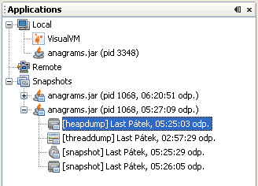

스냅샷 활용
VisualVM 애플리케이션 데이터의 스냅샷을 생성해서 로컬시스템에 저장할 수 있다. 스냅샷은 저장한 후 언제든 다시 열고 볼수 있기 때문에 애플리케이션에 대한 데이터를 수집하는 편리한 방법이다. 대상 애플리케이션은 스냅샷을 보기 위해 실행할 필요가 없다. 스냅샷은 다른 사람에게 보내서 그 사람이 직접볼수도 있다.
스냅샷 타입
스냅샷은 VisualVM에서 열수 있도록 특정시점에 수집된 데이터를 보관한다. 스냅샷은 몇가지 타입으로 생성및 저장할 수 있다.
프로파일러 스냅샷
프로파일러 스냅샷은 스냅샷을 생성한 시점의 프로파일링 데이터를 가진다. 프로파일링 세션을 유지하는 동안 특정시점에 프로파일러 스냅샷을 생성할 수 있다. 프로파일러 스냅샷을 생성하면, Applications창의 애플리케이션 노드 아래 스냅샷을 나타내는 노드가 표시된다. 임시로 생성되는 스냅샷 파일은 VisualVM 사용자디렉터리에 저장된다.
VisualVM은 프로파일러 스냅샷에서 다음의 두가지 타입을 가진다.
- 메모리 스냅샷. 메모리 스냅샷은 할당된 객체의 프로파일링 데이터를 가진다. 메모리 사용 상황을 분석하기 위해 프로파일러를 사용해서 메모리 스냅샷을 생성할 수 있다.
- CPU 스냅샷. CPU스냅샷은 애플리케이션의 성능에 대한 데이터를 가진다. 애플리케이션의 성능을 분석하기 위해 프로파일러를 사용해서 CPU스냅샷을 생성할 수 있다.
메모리 프로파일링 스냅샷의 스크린샷

CPU 프로파일링 스냅샷의 스크린샷

프로파일러 스냅샷을 나중에 보고싶다면, 프로파일러 스냅샷이나 애플리케이션 스냅샷을 선택해서 스냅샷을 로컬시스템에 저장해야한다.
프로파일러 스냅샷 생성
프로파일링 세션을 유지하는 동안 프로파일러 스냅샷을 생성할 수 있다. 메모리나 CPU 스냅샷을 생성했다면, 스냅샷은 메인창의 애플리케이션 탭에 열린다.
스냅샷을 생성하기 위해서는 다음의 방식을 선택하면 된다.
- Profiler탭에서 Take Snapshot of Collected Results 버튼을 클릭한다.
- 애플리케이션 노드를 선택하고 마우스 우측버튼을 클릭한뒤 Profiler Snapshot를 선택한다.
스냅샷 툴바를 사용하기 위해서는 다음의 과정을 거친다.
- 스냅샷 파일을 저장 스냅샷 파일로 저장하기 위해 클릭(로컬시스템에 저장할때는 .nps 확장자를 사용)
- 현재 보고있는 화면을 이미지로 저장 스냅샷을 이미지로 저장하기 위해 클릭(로컬시스템에 저장할때는 .png 확장자를 사용)
- 결과 검색 프로파일링 결과에서 검색어를 찾기 위해 클릭
- 다음 찾기 뒤에 나오는 검색어를 다시 찾기 위해 클릭
- 이전 찾기 앞에 나오는 검색어를 찾기 위해 클릭
애플리케이션 스냅샷
애플리케이션 스냅샷은 스냅샷을 생성한 시점에 애플리케이션의 힙덤프, 쓰레드덤프, 프로파일러 스냅샷을 수집한다. 애플리케이션 스냅샷은 자바 가상머신에 대한 일반적인 정보 또한 수집한다.
Applications창의 애플리케이션 노드를 선택하고 마우스 우측 버튼을 클릭하고 팝업메뉴에서 Application Snapshot를 선택해서 애플리케이션 스냅샷을 생성한다. 애플리케이션 스냅샷은 VisualVM을 켜둔동안 유지된다.
애플리케이션 스냅샷을 생성할때
- 애플리케이션 스냅샷 노드는 Applications창에서 Snapshots노드아래 표시된다.
- 애플리케이션 데이터는 VisualVM 사용자디렉터리의 repository/snapshots 디럭터리안에 폴더별로 저장된다.
애플리케이션 스냅샷은 Applications창의 Snapshots노드아래 나열된다. 스냅샷의 내용을 보기 위해서 애플리케이션 스냅샷 노드의 + 를 열어보자.
애플리케이션 스냅샷을 생성한 후, Applications창에서 보이는 애플리케이션 스냅샷의 + 를 열어서 컨텐츠의 내용을 보거나 변경할 수 있다. 스냅샷을 열거나 저장하고 이름을 변경하거나 삭제하는 팝업메뉴를 열기 위해 애플리케이션 스냅샷 노드나 애플리케이션 스냅샷 노드아래 나열된 항목들을 선택하고 마우스 우측 버튼을 클릭할 수 있다. 로컬시스템에 하나의 애플리케이션 스냅샷 아카이브(.apps)로 애플리케이션 스냅샷을 저장할 수 있다.
애플리케이션 스냅샷의 Overview탭은 JVM소프트웨어에 대한 정보를 수집한다.